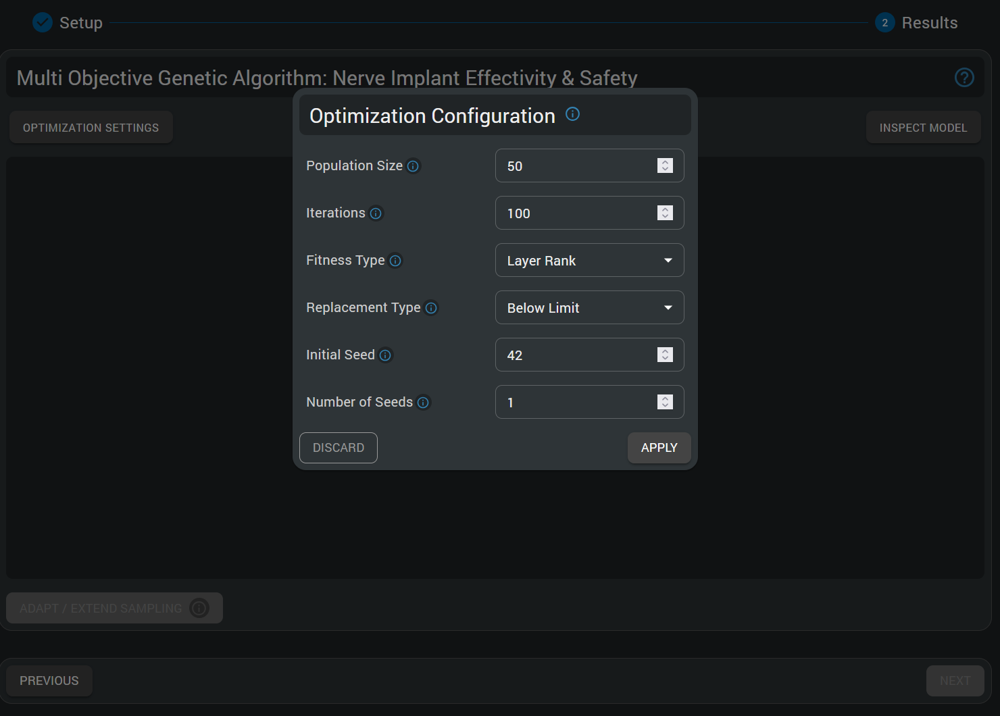
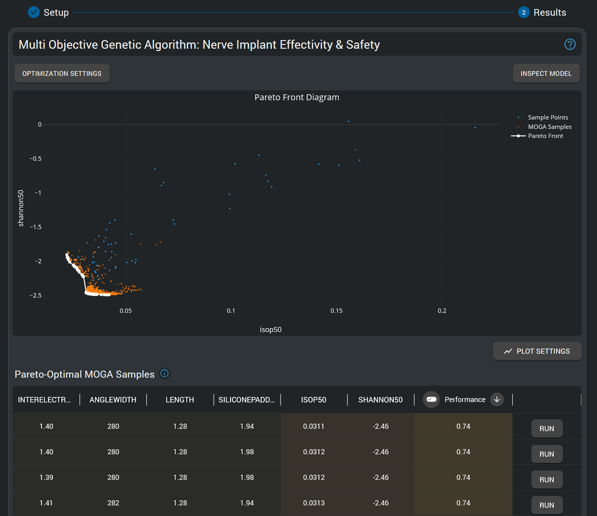

Multi-Objective Genetic Algorithm (MOGA) Tutorial - Sural Nerve Pain Relief Neural Implant Design Optimization
Model Intelligence: A Paradigm Shift in Simulation Analysis
Meta-modeling (or surrogate modeling) represents a transformative approach to understanding complex simulation models. By creating simplified mathematical representations of computationally intensive simulations, meta-modeling enables rapid exploration of parameter spaces that would otherwise require thousands of time-consuming simulations. This "model intelligence" approach empowers users to gain deeper insights into parameter sensitivities, optimize designs efficiently, quantify uncertainties, and make data-driven decisions with unprecedented speed. For bioelectronic applications, where biological variability and design parameters interact in complex ways, meta-modeling transforms raw simulation data into actionable knowledge—revealing relationships between inputs and outcomes that might remain hidden in traditional simulation approaches. The techniques you'll learn in this tutorial represent a major advancement in simulation analysis, allowing you to extract maximum value from your models while dramatically reducing computational overhead.
Introduction
This tutorial demonstrates the power of Model Intelligence HyperTools for multi-objective optimization in bioelectronic device design. Unlike single-objective optimization, real-world engineering problems often involve competing objectives that must be balanced through intelligent tradeoffs.
In particular, a neural implant at the sural nerve will aim to disrupt pain signals for sural nerve pain patients, a chronic pain condition, while keeping within safe stimulation limits to prevent damage to the nerve and neighbouring tissues. The Multi-Objective Genetic Algorithm (MOGA) approach enables simultaneous optimization of multiple conflicting objectives, revealing the Pareto frontier of optimal design tradeoffs.
Preparation
- Sign into your sim4life.io / sim4life.science account.
- Click on the + New button on the top left of the Dashboard.
- Under the HyperTools section, choose Multi-Objective Genetic Algorithm (MOGA)
 MOGA HyperTools are available in the + New menu for multi-objective optimization studies.
MOGA HyperTools are available in the + New menu for multi-objective optimization studies.
Pipeline
Tutorial Setup
For this tutorial, this pipeline has already been set up & a full sampling campaign executed, so that users can directly explore the MOGA HyperTool's features. Details on the pipeline setup are provided here for completeness.
Pipeline Workbench
The workspace includes: 1. Input parameters for electrode design parameters, tissue conductivities, and simulation parameters. 2. Computational nodes which will build the model, perform simulations and extract numerical results based on the values of the input parameters. 3. Output probes for resulting output metrics (quantities-of-interest, QoIs).
 Nerve Implant Effectivity & Safety pipeline, including nodes for input parameters and output QoIs.
Nerve Implant Effectivity & Safety pipeline, including nodes for input parameters and output QoIs.
Modeling & Simulation Workflow
The computational pipeline includes the following steps:
- Loading a segmented histological nerve cross-section (multifascicular).
- Generating a 2D mesh and performing a 2.5D extrusion.
- Inserting two electrodes with parameterized angle width, length, inter-electrode spacing, and extra silicone insulation padding at both ends.
- Setting up an electromagnetic (EM) simulation with parameterized conductivity for blood, epineurium, perineurium, surrounding tissue, and fascicles (longitudinal and transversal).
- Extracting impedance and E_IEEE (ICNIRP) peak exposure.
- Extracting charge-per-phase, charge-density-per-phase, and Shannon criteria, as safety-related metrics for neurostimulation.
- Adding fiber trajectories with statistically varying diameters.
- Performing estimation of neurophysiological activation thresholds and extracting recruitment isopercentiles (10/50/90%) in terms of current (mA).
HyperTool Setup
Starting a MOGA HyperTool
- In the Dashboard, press the "+ New" button on the top left
- In the HyperTools section, click on the "Multi-Objective Genetic Algorithm (MOGA)" option.
- Wait for the service to load.
Choosing a Function and Configuring the MOGA Study
- In the "Function Setup" step, select the "Nerve Implant Effectivity & Safety" function.
- It should have the defined design parameters (Inter-Electrode Spacing, Angle Width, Length, Width, and Silicone Padding) as inputs, and the defined QoIs as outputs.
- The info button allows visualization of the underlying pipeline.
- For this tutorial, parameter ranges have already been determined.
 The MOGA HyperTool allows choice of the function to be analyzed, definition of parameter ranges, and selection of objectives for multi-objective optimization. For this tutorial, these ranges and objectives have already been configured.
The MOGA HyperTool allows choice of the function to be analyzed, definition of parameter ranges, and selection of objectives for multi-objective optimization. For this tutorial, these ranges and objectives have already been configured.
Multi-Objective Optimization Configuration
The MOGA approach requires defining multiple competing objectives that will be simultaneously optimized. In bioelectronic device design, common objectives include:
- Minimize stimulation threshold (improve efficacy - lower current needed for activation)
- Minimize safety metrics (reduce risk - lower Shannon criteria, charge density)
-
Optimize geometric constraints (practical manufacturing and implantation considerations)
-
Once all parameter ranges and objectives have been configured, click "Next" to initiate the optimization process.
- Wait until the MOGA optimization completes. This operation might take several minutes as the genetic algorithm explores the design space.
Analysis of Results
The MOGA HyperTool provides powerful visualizations for understanding multi-objective optimization results, most importantly the Pareto frontier - the set of optimal solutions where improvement in one objective can only be achieved by accepting degradation in another objective.
 Configuration of the multi-objective optimization setup, including selection of competing objectives, optimization direction (minimize/maximize), and genetic algorithm parameters such as population size, number of generations, and convergence criteria.
Understanding the Pareto Frontier
The core concept in multi-objective optimization is the Pareto frontier (also called Pareto front or Pareto optimal set). This represents the set of solutions where: - No objective can be improved without degrading at least one other objective - Each point represents a different optimal tradeoff between competing goals - Engineers can select from these solutions based on specific priorities and constraints
Visualizing Multi-Objective Results
The MOGA results are primarily visualized through the Pareto frontier plot, which shows the relationship between competing objectives and highlights the optimal design tradeoffs.
 The Pareto frontier visualization shows the optimal tradeoffs between competing objectives. Each point represents a different optimal design configuration. The frontier reveals that improvements in stimulation efficacy (lower isopercentile threshold) generally require accepting higher safety risks (higher Shannon criteria), demonstrating the fundamental tradeoff inherent in neural stimulation device design. Points along the frontier represent different engineering compromises - from highly conservative designs prioritizing safety to more aggressive designs prioritizing efficacy.
Interpreting the Results
The Pareto frontier provides several critical insights:
- Tradeoff Relationships: The shape and slope of the frontier reveal how strongly objectives compete with each other
- Design Flexibility: The spread of the frontier indicates how much flexibility exists in balancing objectives
- Optimal Operating Points: Different regions of the frontier correspond to different design philosophies (safety-first vs. performance-first)
- Constraint Identification: Areas where the frontier flattens may indicate physical or practical limits
Extracting Design Recommendations
From the Pareto frontier analysis, engineers can:
- Identify knee points - solutions offering the best compromise between objectives
- Select designs based on priorities - choose points emphasizing safety, efficacy, or balanced performance
- Understand design limits - recognize theoretical bounds on achievable performance
- Guide further optimization - identify which parameters most strongly influence the tradeoffs
Conclusion
In this tutorial, we've explored how Multi-Objective Genetic Algorithm (MOGA) optimization can systematically address the inherent tradeoffs in bioelectronic device design. Through the Model Intelligence approach, we were able to:
- Simultaneously optimize competing objectives of efficacy and safety without requiring subjective weighting functions
- Discover the Pareto frontier revealing all optimal design tradeoffs available within the parameter space
- Understand fundamental design limitations where improvements in one objective necessitate degradation in another
- Provide engineering decision support with quantitative tradeoff analysis for design selection
The MOGA analysis revealed several key insights: - Neural stimulation device design involves fundamental tradeoffs between efficacy and safety - The Pareto frontier quantifies these tradeoffs, showing achievable performance bounds - Different regions of the frontier correspond to different design philosophies and clinical priorities - Optimal designs exist across a spectrum of compromises, not at a single point
This tutorial demonstrates how Model Intelligence tools can revolutionize complex engineering decisions by providing comprehensive optimization results that would be impossible to discover through traditional parameter studies. The MOGA approach is particularly valuable for bioelectronic applications where safety and efficacy must be carefully balanced, and where regulatory approval requires demonstrable optimization of competing objectives.
Next Steps
For further exploration of the designs identified through MOGA optimization, we recommend:
- Response Surface Modeling Tutorial to understand detailed parameter dependencies around Pareto optimal points
- Uncertainty Quantification Tutorial to assess the robustness of selected designs against biological variability
The combination of MOGA optimization for design discovery, RSM for detailed analysis, and UQ for robustness assessment provides a comprehensive Model Intelligence workflow for advanced bioelectronic device development.